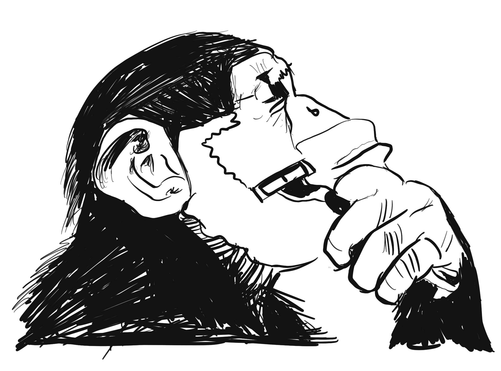

Shaven Primates

Scroll...
Scroll...
Josh is a talented multiinstrumentalist who has fifteen years playing experience and a BA Honours degree in Popular Music. He is a classically trained pianist, synthesiser player in a local Progressive Rock band, acoustic songwriter, specialising in fingerpicking and the more modern styles shown by artists such as Jon Gomm, and singer in a local covers group.
He has gigged extensively across the Midlands and Oxford, and has been teaching privately for four years, across all ages and experience levels.
Chris grew up amongst the booming skate scene on the rough streets of Newcastle during the early nineties, to a sound track of hip hop, grunge and the smiths. He spent his youth playing music, street skating, thai boxing and competing in the pole vault. More recently has made a home for himself in South London with his beautiful partner from NYC. Aside from a love of music he has a passion for martial arts and when not building robots or playing bass he can be found competing in kick boxing or studying fight videos.
He started his musical career at a young age playing piano, later moving to tenor sax in school jazz bands, and then as a frustrated drummer found electronic music and eventually picked up the finest of all instruments, the electric bass. He has been a member of electronic music collectives and several heavy rock bands. Chris's influences vary from experimental electronica, jazz and techno to stoner rock, post-punk and drum & bass.
Jarod started playing music as a teenager and hasn't stopped. He started out with trumpet and ended up with a guitar and a mic as the lead singer for "Hendry House Blues Band". As the years went by he realized the music scene in his small town of rural Georgia was in desperate need of percussionists and started to play drums.
As a drummer Jarod has toured most of the East Coast and the Mid West of the United States, working in various genres from country western to reggae and even some hard rock/new metal. After “hopping the pond” he found the Primates and has been working diligently writing and recording the upcoming album.
He holds a Masters Degree from the School of Hard Knocks which he attended while working for a charity to feed starving musicians.
Tom has over ten years playing and gigging experience at both a local and national level playing Electric Guitar and Bass. He has been teaching privately for four years at all age and experience levels, and also teaches at the local Oxford Rockschool for children aged between ten and fifteen.
He holds a BA Honours degree in Popular Music with a first in performance and songwriting. Tom has played everywhere from the O2 Academy in Oxford to King Tuts in Glasgow, with bands covering styles from Progressive Rock to Funk, Blues, Classic Rock covers and more.
Mark's got a story he thinks you all would like to hear.
It's been 36 years in the making.